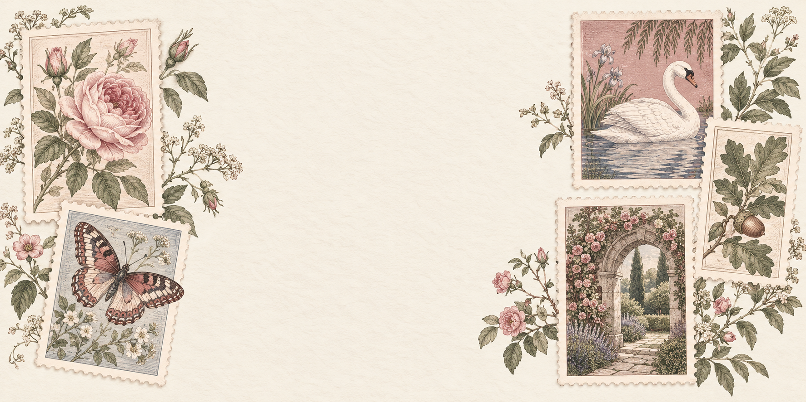
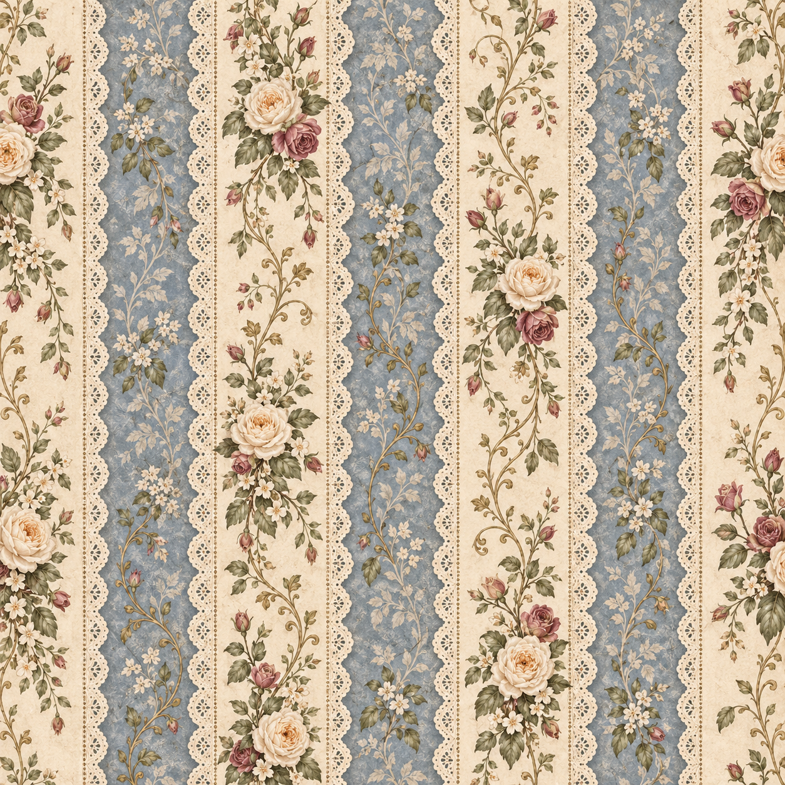
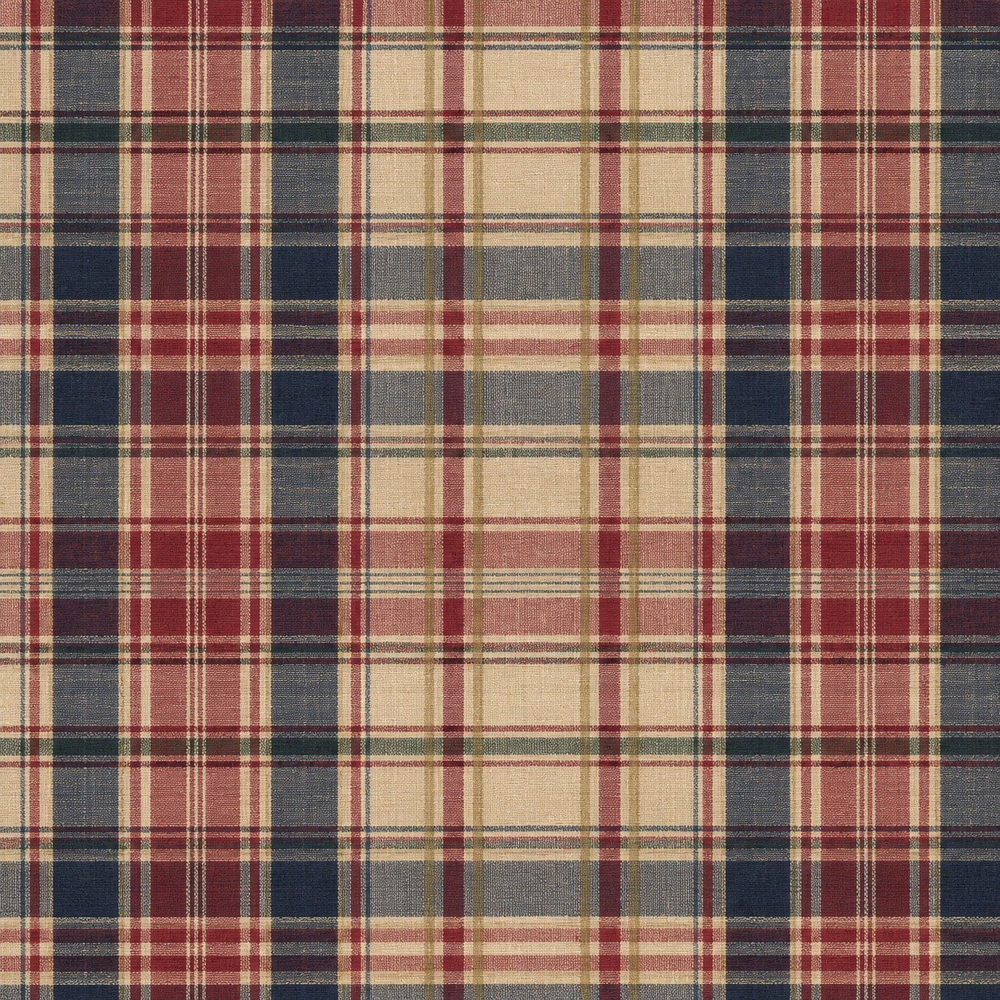
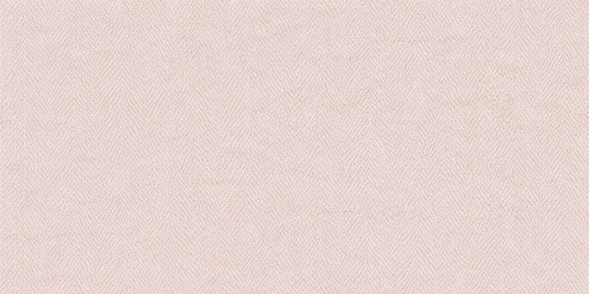
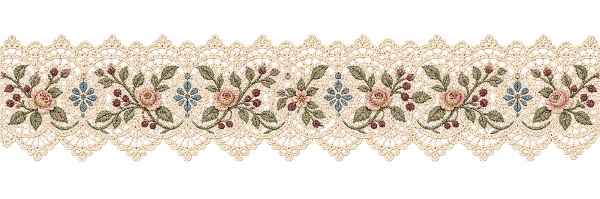
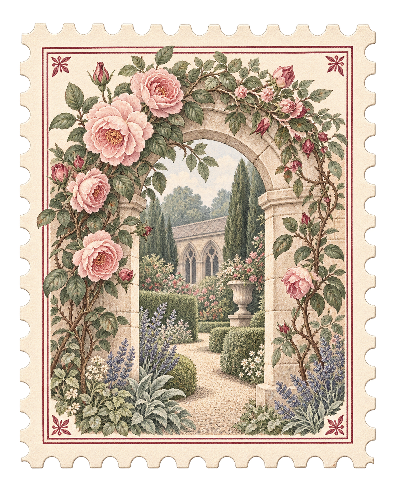
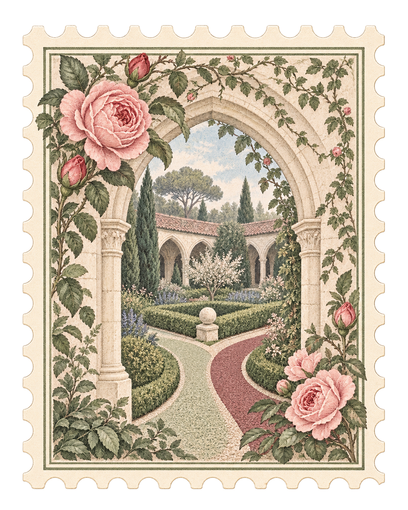
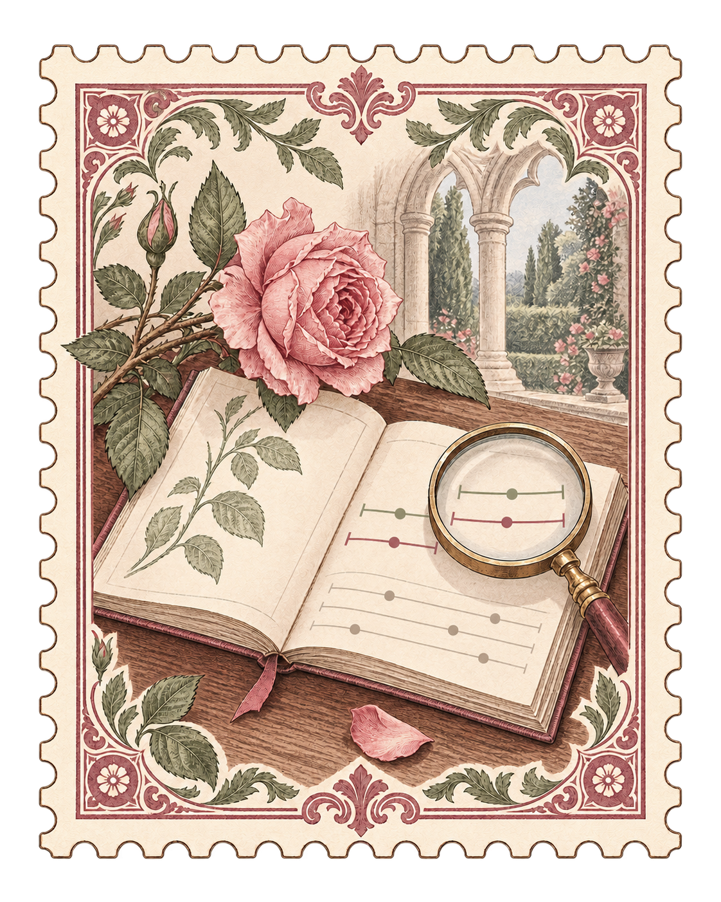

Background surface
Botanical Postage Background
Hero or closing CTA surround; keep copy on the calm central paper.
Download original PNG Return to brand kit
Return to brand kitBotanical prints, fine lace, woven cloth and illustrated paper stamps extend the Garden and Cloister identity. The five supplied images guide the materials and mood; these assets use new compositions and illustrations.
Keep the core forest, ivory and burgundy palette. Dusty rose and faded blue are supporting material colors, not new action colors. Use one ornate treatment per section, with calm ivory insets for content and charts. Keep the Returning Wordmark on a quiet surface.
These are finite PNG backgrounds. Seamless tiling is not verified: use a single panel or cover crop. Stamp illustrations are decorative stationery motifs, not security, calibration or approval badges.

Hero or closing CTA surround; keep copy on the calm central paper.
Download original PNG
Study request or editorial section; copy sits on quiet linen field.
Download original PNG
Feature-card backs and occasional full-width decorative panels; put text on a solid inset.
Download original PNG
About or resource chapter backdrop; avoid direct text over ornate stripes.
Download original PNG
Small card backs, footer strip or image mat; keep text on ivory inset.
Download original PNG
Quiet section surface; primary wordmark and dark body text can sit above it.
Download original PNG
Decorative divider; use as image with contain, no essential information in lace.
Download original PNG
Decorative editorial image for method introduction; not a certification or postage artifact.
Download original PNG
Handoff illustration for scenario or product cards; decorative only.
Download original PNG
Backtest or report editorial accent; pictured chart is illustrative, not a measured result.
Download original PNGLive layout studies show the artwork with editable copy and solid surfaces. These examples link to the existing imagery and identity libraries.
A quiet linen field supports copy while roses and lace frame the edge.
Explore the image library →Ornate botanical paper surrounds a calm ivory content card.
View the selected identity →Tartan adds richness to a short chapter or card back. Analytical content stays on a plain surface.
View the brand palette →Decorative images should use empty alt text when they add no information. Keep download-gallery alt labels descriptive. Avoid patterned chart areas, busy navigation backgrounds or full-page tartan. Use the lace strip once as a divider and the stamps as small editorial illustrations.
For shutters or card flips, decorative surfaces can appear on the back face. Expose the same content on focus and tap, and show a static face for reduced motion. No essential content should require a hover.